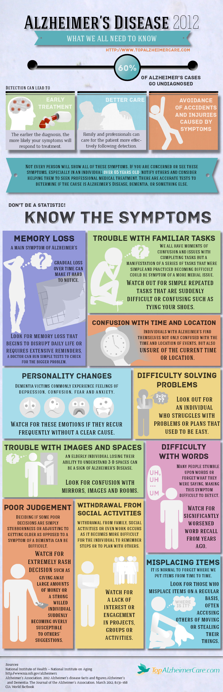

Neurological Disorder: Alzheimers Disease
This is a very common disease which there are more than 3 million US cases per year. Brain cell connections an the cells themselves degenerate and die, eventually destroying memory and other important mental functions. Memory loss and confusion are the main symptoms. Furthermore, no cure exists, but medications and management strategies may temporarily improve the symptoms.
The disease course is divided into four stages, with a progressive pattern of cognitive and functional impairment.
Stages of Alzaheimer
Effects of aging on memory but not ADL
- Forgetting things occasionally
- Misplacing items sometimes
- Minor short-term memory loss
- Not remembering exact details
Early stage Alzheimer
- Not remembering, episodes of forgetfulness
- Some confusion in situations outside the familiar
- Forgets names of family or friends
- Changes may only be noticed by close friends or relatives
Middle stage Alzheimer
- Greater difficulty remembering recently learned information
- Deepening confusion in many circumstances
- Problems with sleep
- Trouble knowing where they are
Late stage Alzheimer
- Poor ability to think
- Problems speaking
- Repeats same conversations
- More abusive, anxious, or paranoid